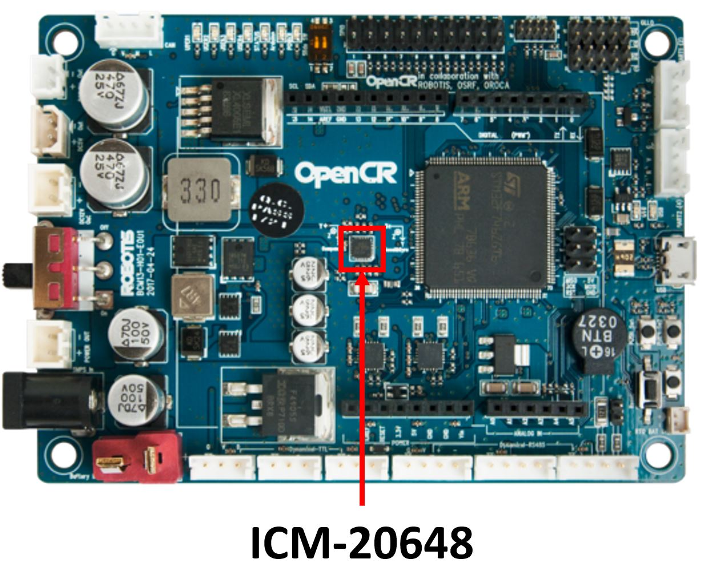
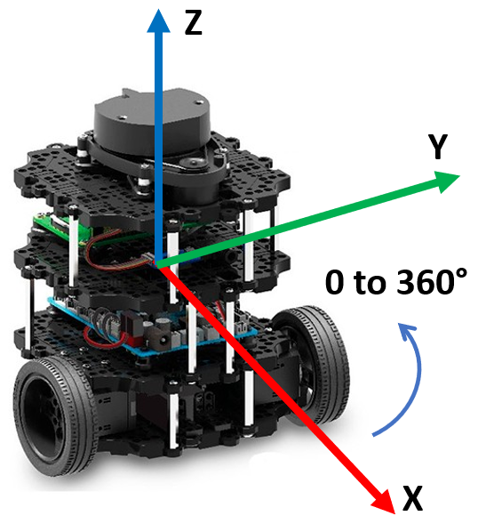

🔬 Lab6: IMU-Based Navigation#
📌 Objectives#
Students should be able to describe how IMU data is used in ROS2 and interpret IMU messages.
Students should be able to set up and analyze IMU (
/imu) and odometry (/odom) topics in ROS2.Students should be able to modify a ROS2 gamepad node to relinquish and regain robot control using button presses.
Students should be able to implement a ROS2 Python node that navigates a robot to a goal using odometry and IMU data.
Students should be able to evaluate and analyze errors in robot navigation and suggest potential improvements.
📜 Overview#
In real-world robotics, an Inertial Measurement Unit (IMU) is essential for tracking motion by measuring orientation, angular velocity, and linear acceleration. The ICM-20648 6-Axis MEMS MotionTracking Device from TDK integrates a 3-axis gyroscope, a 3-axis accelerometer, and a Digital Motion Processor (DMP). This IMU is embedded in the OpenCR1.0 board, an open-source robot controller featuring an ARM Cortex-M7 processor. The OpenCR board applies an Extended Kalman Filter (EKF) to fuse sensor data, generating IMU estimates at 170 Hz.
{kind=link}
The IMU significantly enhances navigation accuracy when combined with odometry. It helps estimate the robot's position over time and improves localization.

{kind=link}
As we discussed earlier, multiple sensors work together to estimate the TurtleBot3’s attitude and heading. These sensors are highly sensitive to magnetic fields, which can vary depending on the location and the device. Even everyday electronic components, including those on the OpenCR board, generate small magnetic fields. Although the IMU is placed at the center of the robot for optimal performance, it is still exposed to various magnetic interferences.
Fortunately, the TurtleBot3 developers anticipated this issue. Each time you run the serial node to connect to the robot, the IMU automatically calibrates itself, ensuring more accurate readings.
🌱 Pre-Lab: Testing the IMU#
Step 1: Launch the TurtleBot3 Simulation#
Open a terminal and start the TurtleBot3 simulation in Gazebo:
$ ros2 launch turtlebot3_gazebo turtlebot_world.launch
Step 2: Verify Communication with the Master#
Ensure the TurtleBot3 is properly communicating with the Master by listing active topics:
$ ros2 topic list
You should see the following topics, including
/imuand/odom:/battery_state /cmd_vel /imu /joint_states /magnetic_field /odom /tf_static
Step 3: Examine the /imu and /odom Topics#
Run the
gamepadandjoynodes.Observe the IMU and odometry data in real-time as you move the robot:
$ ros2 topic echo /imu $ ros2 topic echo /odom
Pay close attention to the nested fields. Be careful not to confuse the different
posehierarchies within the Imu and Odom messages.Inspect the underlying message definitions so you know how to access these fields in your code:
ros2 interface show <message_type>
You can find the appropriate <message_type> by running:
$ ros2 topic info <topic_name>
Step 4: Visualizing Data in rqt#
Open
rqt:$ rqtMonitor
/imuand/odomdata inrqtwhile moving the robot.Compare the pose data from Gazebo and
rqt, noting how simulation noise affects readings.Monitor the
/imuand/odomtopics usingrqtas you move the robot in Gazebo.In Gazebo, go to
Models>burger, then in thepropertysection, selectposeto view the robot’s position and orientation in roll-pitch-yaw format.In
rqt, enable theTopic Monitorand activate the/imuand/odomtopics to track orientation and position in real time.Note that orientation in
rqtis shown using quaternions.The pose values in Gazebo and rqt are not the same. Gazebo simulation publishes position and orientation with noise. By default, Gazebo adds Gaussian noise to the data generated by its sensors to simulate real-world conditions.
💻 Lab Procedure#
In this lab, you will create a ROS2 Python package that enables the TurtleBot3 to navigate to a desired location and orientation using data from the IMU (/imu) and ODOM (/odom) topics.
🛠 Update .bashrc for Easier Builds#
To avoid common mistakes when running colcon build, follow these steps to streamline your workflow. This will ensure that colcon build is always run in the correct directory and that the necessary setup file is sourced automatically.
Use
geditto open the.bashrcfile:$ gedit ~/.bashrc
Near the bottom the
.bashrcfile, look for the following functions. If they are not already present, add them.# Function to build with optional arguments function ccbuild() { cd ~/master_ws && colcon build --symlink-install "$@" source ~/master_ws/install/setup.bash } # Export the function to make it available in the shell export -f ccbuild
Save the file, close the editor, and restart your terminal for the changes to take effect.
Instead of manually navigating to
~/master_ws, runningcolcon build --symlink-install, and sourcinginstall/setup.bash, you can now simply run$ ccbuildThis ensures the build process is executed correctly every time and and sources the necessary setup file.
You can also pass arguments to
colcon buildthrough theccbuildfunction. For example:$ ccbuild --packages-select lab6_nav
This builds only the
lab6_navpackage, saving time by skipping previously built packages.By following these steps, you’ll streamline your workflow and minimize build-related errors.
🛠 Testing IMU on the Physical Robot#
To test the IMU on the physical robot, follow these steps:
Use SSH to launch the
robot.launch.pyfile on the robot.Start the
gamepadandjoynodes on your master computer.As you move the robot in Gazebo, monitor the
/imuand/odomtopics using:$ ros2 topic echo /imu
$ ros2 topic echo /odom
The raw output of these topics can be overwhelming. Use the following commands to filter and display only the relevant sections:
ros2 topic echo /imu | grep -A 4 'orientation'
ros2 topic echo /odom | grep -A 3 'position'
The
-Aoption ingrepstands for “after context.” It displays the specified number of lines following the matching line.For
/imu, this command shows theorientationsection and the next 4 lines.For
/odom, it shows thepositionsection and the next 3 lines.
Convert quaternions to Euler angles: Both topics use quaternions to represent orientation, which are not human-readable. Later, we will convert these quaternions into Euler angles for easier interpretation.
🛠 Modify gamepad.py to Include Control Relinquishment#
In this section, you’ll modify the gamepad.py script to add functionality for relinquishing and regaining control of the robot. This will allow users to toggle control states using specific gamepad buttons.
Locate and open the
gamepad.pyfile.In the constructor of the
Gamepadclass, add the following attributes:# Flag to track control status (default: True) self.has_control = True # Create a publisher for control relinquishment messages. # - Publishes to the 'ctrl_relinq' topic. # - Uses Bool messages to indicate control status. # - Queue size of 1 ensures only the latest control state is kept. self.ctrl_pub = self.create_publisher(Bool, 'ctrl_relinq', 1)
In the
joy_callbackmethod, implement the following logic to toggle control using buttons A (Green) and B (Red):# Create a new Bool message for "control relinquishment status" relinquish = Bool() # TODO: Check if the RC (Remote Control) has control and button A (Green) is pressed # Set control flag to False (relinquish control) # Change "control status" to relinquished. # Publish the control status # Log status update self.get_logger().info("RC has relinquished control.") # TODO: Check if RC does not have control and button B (Red) is pressed # Set control flag to True (regain control) # Set control status to regained. # Publish the control status # Log status update self.get_logger().info("RC has taken over control.") # If control is relinquished, stop further processing if not self.has_control: return
From the gamepad node’s standpoint, this addition introduces a simple control‑ownership mechanism. The node now keeps track of whether the remote operator currently “has control” of the robot. When the user presses the A (Green) button, the node publishes a message indicating that control has been relinquished. When the B (Red) button is pressed, it publishes a message indicating that control has been regained.
The
has_controlflag ensures that once control is relinquished, the node stops processing joystick commands entirely, preventing unintended motion. This makes the gamepad node responsible not only for reading joystick input but also for broadcasting the robot’s control state to the rest of the system.This is a common safety practice in robotics to halt autonomous tasks a robot is executing. Another safety practice is to integrating an easily accessible emergency stop switch that cuts off the main power to the robot.
Test the gamepad node:
Run the gamepad node.
Open another terminal and monitor the
cmd_veltopic.Press button A on the gamepad and verify that control is relinquished (no movement commands should be published by the gamepad).
Press button B and verify that control is regained (movement commands should be published again).
Check the
ctrl_relinqtopic to confirm that control status messages are being published.
Create a New ROS2 Package#
Open a terminal and navigate to the
srcdirectory of your workspace:$ cd ~/master_ws/src/ece387_ws
Use the following command to create a new ROS2 package named
lab6_nav:$ ros2 pkg create lab6_nav --build-type ament_python --dependencies rclpy geometry_msgs nav_msgs sensor_msgs
Dependencies:
rclpy: ROS2 Python API.geometry_msgs: ForTwistmessages (velocity commands).nav_msgs: ForOdometrymessages.sensor_msgs: ForIMUmessages.
Download the
move2goal.pyfile and save it in thelab6_navpackage directory:~/master_ws/src/ece387_ws/lab6_nav/lab6_nav/
Open the
setup.pyfile and modify theentry_pointssection to include themove2goalscript:entry_points={ 'console_scripts': [ 'move2goal = lab6_nav.move2goal:main', ], },
Build the package using the
ccbuildcommand:ccbuild
Implement the move2goal.py Script#
The move2goal.py script will control the TurtleBot3 to move to a specified goal location and orientation. Follow these steps to complete the implementation:
Initialize publishers and subscribers.
Publisher: Create a publisher for
/cmd_velto send velocity commands to the robot.Subscribers: Subscribe to:
/odomto track the robot’s position./imuto get orientation data./ctrl_relinqto check if the node has control.
Implement the
odom_callbackfunctionExtract the
xandyposition from the receivedOdometrymessage.
Implement the
imu_callbackfunctionExtract the quaternion orientation from the
Imumessage.Convert the quaternion to Euler angles using the
euler_from_quaternionfunction.Update the
yawvalue.
Implement the
ctrl_relinq_callbackfunctionUpdate the
self.has_controlflag based on the receivedBoolmessage.Log a message indicating whether control is taken or relinquished.
From the robot’s standpoint,
self.has_controlacts as a permission gate. When this flag becomes False, the robot immediately stops generating motion commands, ensuring that autonomous behavior halts the moment control is taken away. When the flag is True, the robot is allowed to continue computing and publishing/cmd_velcommands toward the goal. In other words, the flag tells the robot whether it is allowed to act.The gamepad node is the source of control decisions—it sets the control state based on button presses and publishes that state on the
ctrl_relinqtopic. The robot (viamove2goal.py) is the consumer of that decision—it listens, updates its ownself.has_control, and behaves accordingly. This separation keeps the control logic clean: the gamepad decides, and the robot obeys.Implement the
control_loopfunctionCompute the angle to the goal and normalize it to the range [-\(\pi\), \(\pi\)].
Compute the distance to the goal using the Euclidean distance formula.
Complete the state machine logic: The state machine consists of four states:
ROTATE_TO_GOAL:
If the angle error is greater than
0.05radians, rotate the robot with an angular speed proportional to the error (0.3 * angle_error). Adjust the proportional coefficient as needed.If the angle error is within the threshold, transition to
MOVE_FORWARD.
MOVE_FORWARD:
Move the robot forward at a constant speed of
0.15(adjustable, but the robot’s maximum speed is0.22).If the distance to the goal is less than
0.15, transition toROTATE_TO_FINAL.
ROTATE_TO_FINAL:
Compute the final orientation error and normalize it.
If the error is greater than
0.05radians, rotate the robot with a speed proportional to the error (0.5 * final_angle_error).If the error is within the threshold, transition to
GOAL_REACHED.
GOAL_REACHED:
Log a message confirming the goal has been reached.
Stop publishing movement commands.
Publish velocity commands: Ensure
cmd_velmessages are published correctly in each state of the state machine.
Build and Test the Package#
Build the
lab6_navpackage using:$ ccbuild --packages-select lab6_nav
Demo the robot:
Run the
move2goalnode and demonstrate the robot moving to the goal location(-0.61, 0.61)in meters.Rotate the robot to face
0°.Hint: Most floor and ceiling tiles in the U.S. are 1’ by 1’ or 2’ by 2’. Use this to estimate distances. (1 foot = 30.48 cm).
🚚 Deliverables#
[15 Points] Complete the
move2goal.pyScript:Ensure the script is fully functional and implements all required features.
Push your code to GitHub and confirm that it has been successfully uploaded. NOTE: If the instructor can’t find your code in your repository, you will receive a grade of 0 for the coding part.
[15 Points] Demonstration:
Show the robot successfully navigating to the goal location and orientation in a real-world setup.
[20 Points] Performance Analysis:
Examine the distance and angle errors printed by
move2goal.py.Discuss the robot’s performance:
Can the robot navigate to a farther distance, such as
(-3, 3)? Why or why not?After the robot reaches the goal, restart the demo without rebooting the robot. Does it work as before? If not, why doesn’t it work anymore?
Suggest improvements to enhance the robot’s navigation capabilities.
Note 1: This deliverable is worth 20 points, more than the other deliverables. Therefore, a detailed and rigorous analysis is expected. Treat this as the analysis section of your project report.
Note 2: Provide quantitative analysis, not qualitative. You don’t need to include plots of measured data, but you should provide the measured data for your analysis. For example, instead of saying, “The robot’s orientation drifted quite a bit as it traveled almost one meter,” you should say, “With its initial orientation of 43.5\(^\circ\), the robot gradually drifted to 39.3\(^\circ\) after traveling 0.73 meters.” For your project, you will need to provide plots for the measured data.